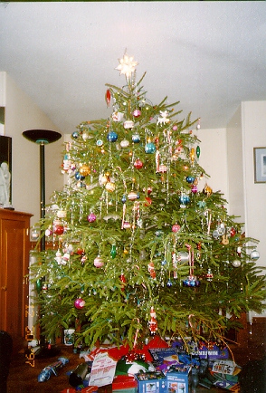

クリスマスツリー (97.12)
一般家庭のクリスマス

| 前回のマンハッタン、ロックフェラーセンター前のクリスマス・ツリーが好評だったので、今度はアメリカの一般家庭のクリスマスツリーにしてみました。 |

=一般家庭のクリスマス・ツリー(97.12)=
|
これはベビーシッター先のディビッドとジャスティンの家ですが、私の知る限りクリスチャンの家は皆、こういう感じです。もうひとつのベビーシッター先エミリーとダニーのところも、その友達の家も、私の家の家主のダグやケイティもこの大きさのクリスマスツリーに飾り付けします。 クリスマスについては、日記にも詳しく書いたことがありますので、こちらをご覧ください(^^) この写真はクリスマスの後に撮りました。クリスマス前だったら、ツリーの下にあるプレゼントは全部きれいにラッピングされていていかにもクリスマスらしいのですが、カメラを忘れてしまった(;o;)ので、クリスマスの後の、プレゼントが開けられた状態で写すことしかできなかったのが残念です(^^;。 もみの木はたいてい本物です。ですから、枯れないように常に水をやります。クリスマスのあと1週間もすると、もみの木は捨てられます。ここでは毎週２、３回、ごみの回収車がそれぞれが家の前に出して置いたごみを回収します。クリスマスのあと、青々としたもみの木が、飾り付けをはずされ、家の前に横倒しにされて捨てられている情景はあまり気持ちのよいものではありません。それで、もみの木を切って飾り付けをすることに反対する人もいるということです。 でも「年に１度だけのことだから」とだいたいの家庭は思っているようです。何よりも子どもたちが喜びますから。なんと言っても、これだけ大きいものを置くスペースが、普通の家庭にあるというのはうらやましいものですね(^^) |
[ホームへ] [写真一覧へ]